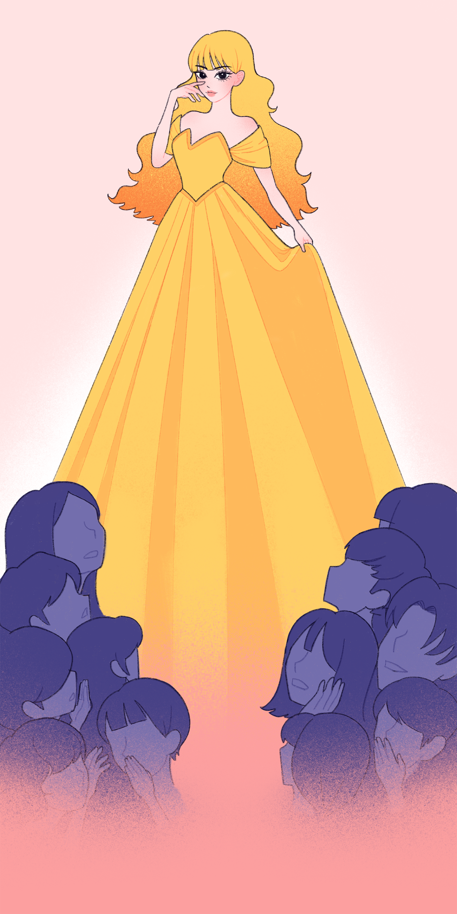

All-Kinds-Of-Fur can only be viewed on desktop. To continue reading, please resize your browser!
All-Kinds-Of-Fur can only be viewed on desktop. To continue reading, please resize your browser!

illustrated by Madi Kang
Now one day it happened that a banquet was being held in the castle, and she said to the cook, "May I go up for a little while and take a look? I will stand outside the door." The cook answered, "Yes, go ahead. But you have to be back here in a half hour and carry out the ashes." Then she took her oil lamp and went into her cubbyhole.
Taking off her fur cloak, she washed the soot from her hands and face so that her full beauty again came to light. Then she opened the nut and took out her dress that glistened like the sun. And after she had done all this she went upstairs to the banquet.
Everyone stepped out of her way, for no one knew her, and everyone thought that she was a princess.
The king approached her, reached his hand out to her, and danced with her, and thought in his heart,
"My eyes have never before seen such beauty."
When the dance had ended, she curtsied, and while the king was looking around, she disappeared, and no one knew where she had gone. Now she had run back to her cubbyhole, quickly taken off her dress, blackened her hands and face, put on the fur cloak, and was once again All-Kinds-of-Fur.
After she had returned to the kitchen and was about to set to work and sweep up the ashes, the cook said, "That's enough until tomorrow. Make the king's soup for me, so I can have a look upstairs, but don't let a hair fall into it, or in the future there will nothing more for you to eat." Then the cook went away, and All-Kinds-of-Fur made soup for the king. She made bread soup, and as good as she knew how. When it was done, she got her golden ring from the cubbyhole and placed it in the bowl that the soup was in.